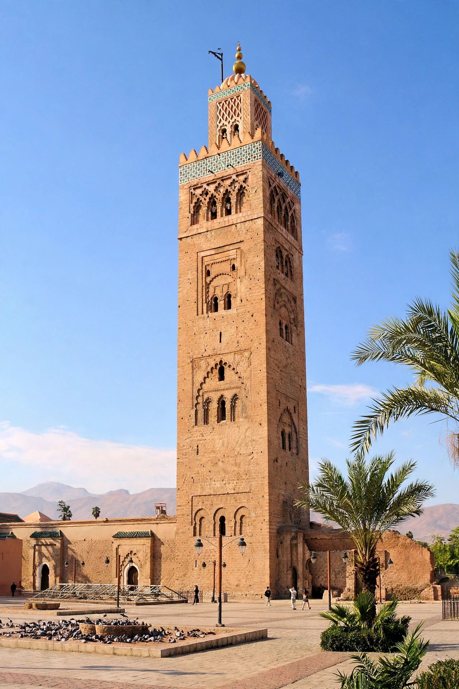

Almohad architecture is the architecture of the Almohad Caliphate (12th–13th centuries), which ruled the Maghreb and al-Andalus. Austere yet monumental, it produced some of the most influential buildings of the western Islamic world, including the Kutubiyya Mosque in Marrakesh and the Giralda in Seville.

Almohad buildings favour massive proportions, square minarets, fortified walls in rammed earth (tabia) and brick, and decoration concentrated in carved bands: sebka (interlacing lozenge) motifs, muqarnas, kufic calligraphy and glazed tile (zellij) emerging toward the end of the period. Doctrine emphasising divine unity reinforced a relatively restrained ornament compared with Almoravid exuberance.
Almohad forms shaped Marinid, Nasrid and later Maghrebi architecture and the Mudéjar style in Christian Spain.